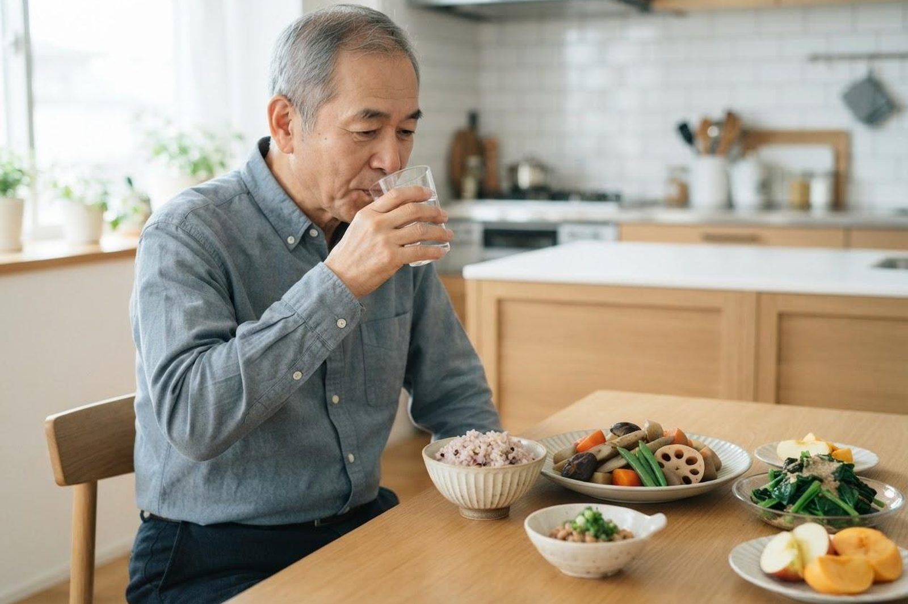

便秘が続いて市販の下剤が手放せません。相談したほうがいいでしょうか？
A. 回答はい、ご相談いただいてかまいません。便秘が長く続き、市販の下剤を使わないと排便できない状態は、消化器内科でお受けしているご相談のひとつです。年齢を重ねると、腸の動きの低下、いきむ力の低下、食事量や水分量の減少、運動量の減少、服用中のお薬の影響などが重なって、便秘が起こりやすくなるとされています。多くは生活の工夫とお薬の調整で付き合っていける状態ですが、これまでと違って急に便秘になった、便が細くなった、便に血が混じる、体重が減ってきたといった変化がある場合には、大腸の病気が隠れていないかを確かめる検査が検討されます。ご自身で見分けるのは難しい部分ですので、気になる状態が続くときは一度ご相談ください。

便秘が続く背景に考えられること
便秘はひとつの原因で起こるとは限らず、いくつかの要因が重なっていることが多いとされています。
- 腸の動きや排便の力の低下：加齢とともに腸が便を送り出す動きが弱まったり、いきむための腹筋や骨盤まわりの力が落ちたりして、便を出しにくくなることがあります。
- 食事量・食物繊維・水分の不足：食が細くなると便のもとになる量そのものが減ります。水分を控えめにしている方も、便がかたくなりやすいとされています。
- 運動量の低下と生活リズムの変化：日中の活動量が減ったり、外出が減ってトイレの習慣が乱れたりすると、便意を感じにくくなることがあります。
- 服用中のお薬の影響：便通に影響しうるお薬は少なくありません。複数の医療機関からお薬が出ている方では、その組み合わせが関係している場合もあります。
- ほかの病気が背景にある場合：甲状腺の機能の低下、糖尿病、神経の病気、大腸のポリープや腫瘍などでも便通が乱れることがあります。便秘が新しく現れた、あるいは急に悪くなったときは、こうした可能性を確かめておくことがすすめられます。
生活のなかでできる工夫
お薬に頼りきりにならないために、まず生活面で整えられることがあります。できそうな項目から試してみてください。
今日から見直せること
- 朝食を抜かずに、決まった時間に食べている
- 野菜・いも類・豆類・海藻・果物など、食物繊維を含む食品をとっている
- 水やお茶をこまめに飲んでいる（水分制限の指示がある方は主治医の指示を優先）
- 朝食後など、決まった時間にトイレに座る習慣がある
- 便意を感じたら我慢せずにトイレに行っている
- 散歩や体操など、体を動かす時間が毎日ある
- トイレでは足台などを使い、前かがみの姿勢をとりやすくしている
- トイレで長時間いきみ続けていない
いずれも急に大きく変えるのではなく、続けられる範囲で少しずつ整えていくことが大切とされています。数週間試しても変わらない場合は、無理に自己流を続けず一度ご相談ください。
市販の下剤を使い続けているとき
市販の便秘薬にはいくつかのタイプがあり、そのうち腸を直接刺激して排便をうながすタイプ（刺激性下剤）は、長期間続けて使うと効きにくくなり量が増えていきやすいことが一般に知られています。「毎日飲まないと出ない」「量が少しずつ増えてきた」という場合は、薬の種類や使い方を見直すことで負担が軽くなる場合があります。自己判断で急にやめると症状が悪化することもありますので、中止や変更をお考えのときは受診時にご相談ください。なお、市販薬・サプリメント・漢方薬・他院で処方されているお薬も、まとめて確認できると調整がしやすくなります。
受診の目安
次のような変化がある場合は、便秘の対処だけで済ませず、大腸の病気が隠れていないかを確かめることが検討されます。国立がん研究センターの資料でも、大腸がんの症状として血便や下血、便が細くなる、便秘や下痢、おなかが張る、貧血の症状などが挙げられています。
すぐに受診を検討してください
- 便に血が混じる、黒っぽい便が出る、トイレットペーパーに血がつく
- 便が鉛筆のように細くなった、便の形が明らかに変わった
- ダイエットをしていないのに体重が減ってきた
- これまで便秘がなかったのに、急に便が出なくなった
- 強い腹痛や吐き気・嘔吐をともない、ガスも出ない
- おなかが張って苦しい、おなかにしこりのようなものを触れる
- 顔色が悪い、めまいや息切れがあり貧血が疑われる
早めの受診をおすすめします
- 市販の下剤を毎日のように使っている、量が増えてきた
- 便秘が数週間以上続き、生活に支障が出ている
- 排便のたびに強くいきむ必要がある、残便感が続く
- 便秘と下痢を交互にくり返すようになった
- 50歳を過ぎてから初めて便秘が気になり始めた
- ご家族に大腸の病気の方がいる、ご自身に大腸ポリープの既往がある
- 健診の便潜血検査で陽性と言われたが、まだ精密検査を受けていない
- 食欲が落ちてきた、食事量が減ってきた
なお健診の便潜血検査で陽性となった場合は、症状がなくても精密検査を受けることがすすめられています。また症状がある場合は、検診を待たずに医療機関を受診するようにと案内されています。
当院での対応
当院は消化器内科（胃腸科）を標榜しており、便秘のご相談をお受けしています。まず排便の回数や便の状態、いつごろからどう変わったか、食事・水分・運動の状況、服用中のお薬などを詳しくうかがい、診察や必要に応じた血液検査・便の検査で、ほかの病気が背景にないかを確認していきます。上に挙げたサインがある場合や、年齢・ご家族の病歴・便潜血検査の結果などから必要と判断される場合には、大腸内視鏡検査（大腸カメラ）をご提案することがあります。当院は新世代の内視鏡システムを導入しており、胃・大腸の内視鏡検査に対応しています。
便秘のご相談は、予約なしで通常の診療時間内に受診いただけます。大腸内視鏡検査は事前の診察と下剤による腸の準備が必要なため、後日の予約制です。検査当日は前処置を含めて半日程度みておいていただくと安心で、検査そのものは通常20〜30分程度が目安とされています。症状があって受ける検査は保険診療の対象となります。費用は検査の内容によって変わりますので、詳しくはお電話でお問い合わせください。受診の際は、保険証（マイナ保険証）とお薬手帳、市販薬を含めて使用中のお薬がわかるものをお持ちください。健診結果をお持ちの方はあわせてご持参ください。
受診時に伝えていただきたいこと
- いつごろから便秘が気になり始めたか
- 排便の回数と、便のかたさ・太さ・色
- 便に血が混じっていないか、残便感があるか
- 使っている市販薬・処方薬の名前と、飲み始めた時期・量の変化
- 体重の変化、食欲、腹痛や張りの有無
- ふだんの食事内容・水分量・運動量
- これまでに受けた胃・大腸の検査と、その結果
- 健診の便潜血検査の結果
参考にした情報
「年のせい」「体質だから」とあきらめる前に、一度ご相談ください。便秘のご相談から大腸内視鏡検査まで、いなだ医院で対応しています。
最終更新：2026年8月26日